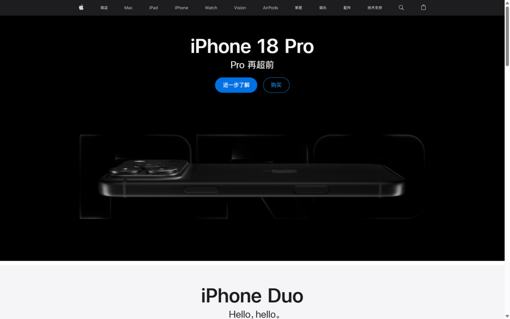
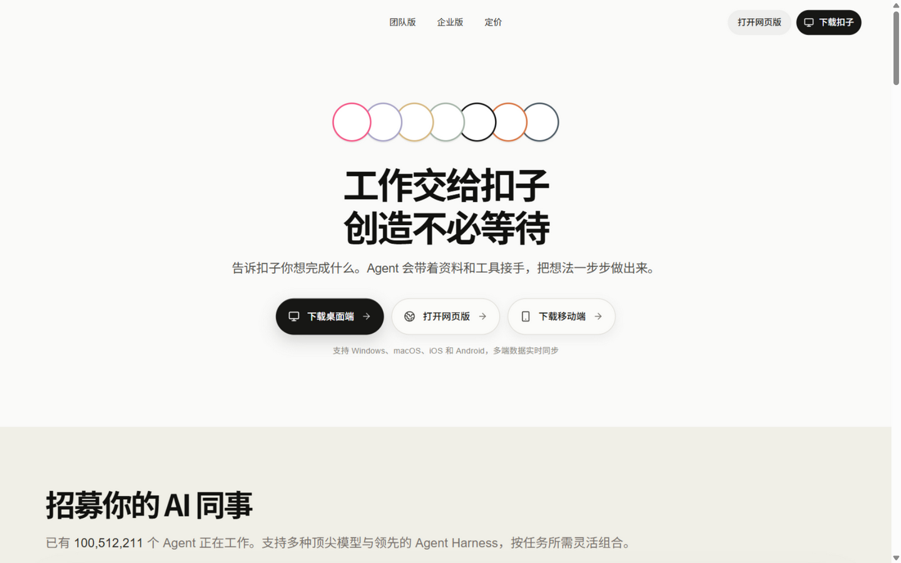
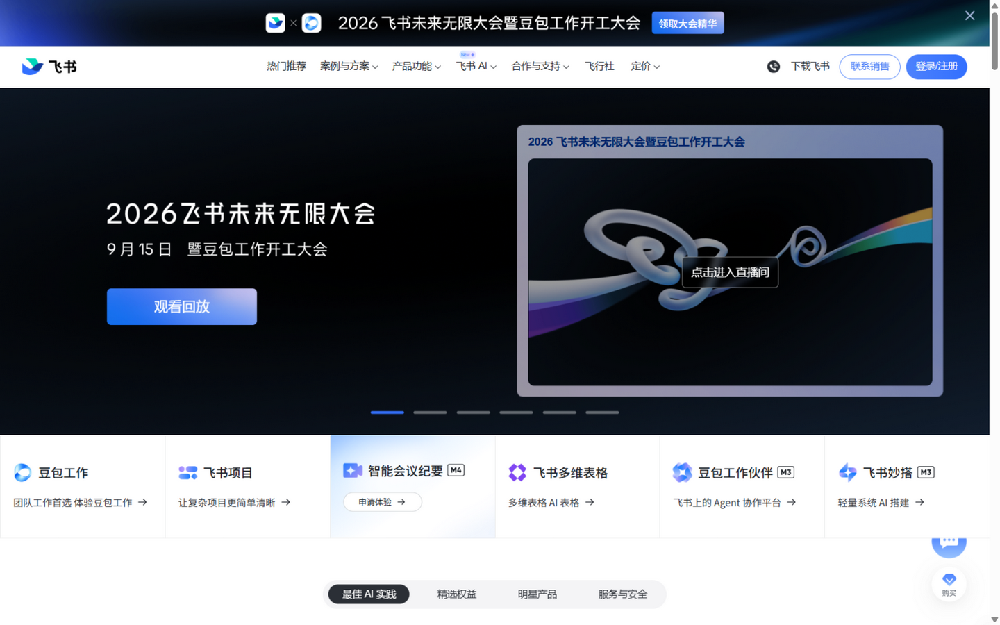
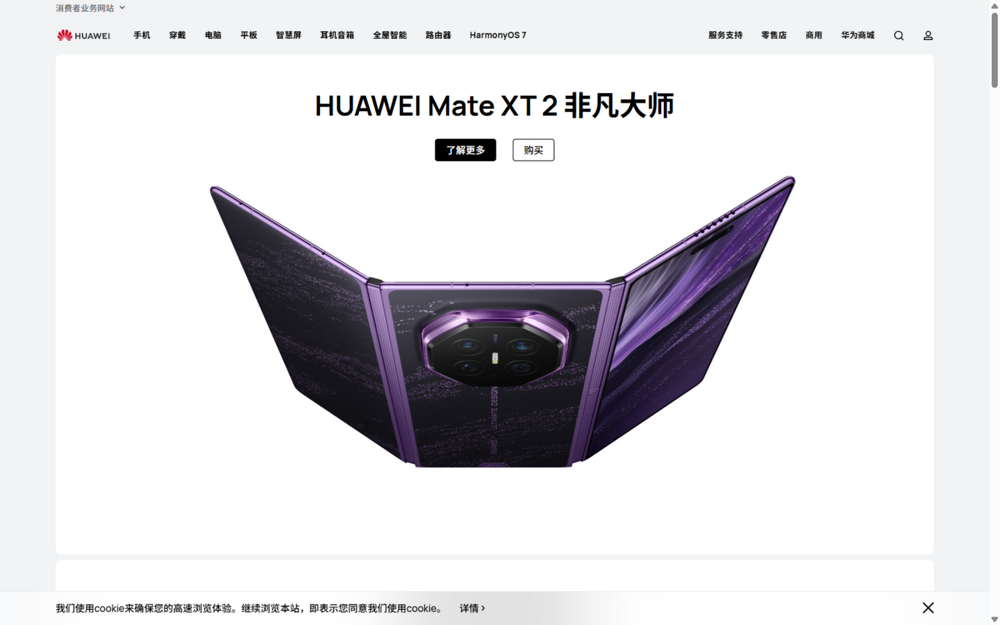

∑ 知微重设计 · 参考图库
高级感界面参考
下面是国内可直接访问、由浏览器实拍的标杆页面；国外标杆因当前网络环境无法直连，附上清单与点评——如果你有代理，我可以再逐一实拍补充进来。
已实拍（点击图片可回看原站）

Apple 中国官网
apple.com.cn
国际标准
高级感的天花板：纯黑舞台 + 巨型产品图 + 一行字卖点。没有多余装饰，全靠留白、对齐和摄影质感撑住"贵"。

扣子 Coze（字节 AI 平台）
coze.cn
国内 · AI
国内最接近 Vercel 气质的 AI 产品：米白底 + 特大号黑体标题 + 黑白按钮，唯一彩色是几个线圈 logo。 proves 中文界面也能做出冷静高级。

飞书
feishu.cn
国内 · SaaS
国内 SaaS 高级感标杆：深色主视觉 + 蓝紫渐变光效 + 产品卡片矩阵。注意它的克制——全站只有一个品牌蓝，其余全是中性灰阶。

华为终端官网
consumer.huawei.com
国内 · 硬件
白底 + 居中超大产品图 + 两颗胶囊按钮，标准的"苹果式"构图。学习点：产品/内容本身就是最好的装饰。
国外标杆清单（当前网络超时，可挂代理后让我实拍）
Linear
必看
linear.app
项目管理工具，"高级感"的行业标准：近黑底色、发丝线边框、克制的紫罗兰光效、字距与行距都是教科书级。我们重设计的整体骨架就参考它。
Vercel
vercel.com
黑白灰 + 一点渐变光晕，把"极简"做出科技豪华感；大标题字距、渐变文字、按钮质感的范本。
Stripe
stripe.com
数据密集型界面如何不显乱：网格严谨、色板克制、代码/数据展示精致。做看板页最值得抄的对象。
Brilliant
教育必看
brilliant.org
和我们最像的产品：数学/科学学习。黑底 + 亮绿强调 + 大量交互式图形，把"学习"做得像游戏但不幼稚——教育产品高级感的最佳参照。
Framer
framer.com
动效驱动的高级感：滚动视差、磁性按钮、流畅转场。我们"开屏动效"追求的最终形态。
Raycast
raycast.com
深色 + 高饱和渐变图标的典范：色彩多但被深色底和网格秩序压得服服帖帖。
Notion
notion.com
编辑感/杂志感的高级：衬线标题 × 无衬线正文、手绘插画点缀、大留白。走"温和学术"路线可参考。
Duolingo
教育必看
duolingo.com
教育游戏化的巅峰：单一大绿主色 + 吉祥物 + 3D 图标。活泼但不 low 的关键在于饱和度控制和一致的角色语言。
灵感库（持续收集高级界面的地方）
Awwwards
awwwards.com
全球网站设计最高评级社区，"Website of the Day" 都是顶级水准，可按 SaaS/Education 筛选。
Godly
godly.website
"Astounding web design" 精选库，量大质高，翻十分钟就能建立审美基准。
Land-book
land-book.com
落地页截图库，按行业/配色/风格筛选，找"教育 + 浅色 + 极简"很方便。
Mobbin
mobbin.com
App 界面截图库（iOS/Web 全流程），看产品内部页面而不是官网，适合参考我们看板/对话页。
Dribbble
dribbble.com
概念稿多、落地稿少，适合找配色和组件灵感（搜 education dashboard / AI learning）。
优设 UISDC
uisdc.com
国内设计师社区，有大量大厂实战复盘和方法论文章，中文语境的设计规范案例多。
说明：实拍图为 1440×900 首屏。国外站点（Linear / Vercel / Stripe / Brilliant / Framer / Raycast / Notion / Duolingo）在当前网络下导航超时——如果你能开代理，我可以立刻逐一实拍并把大图补进这个图库。